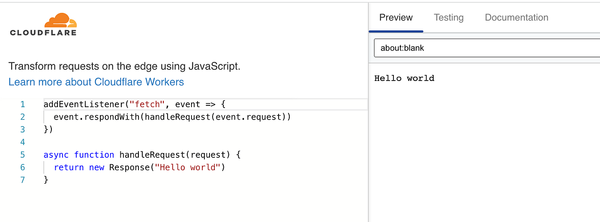
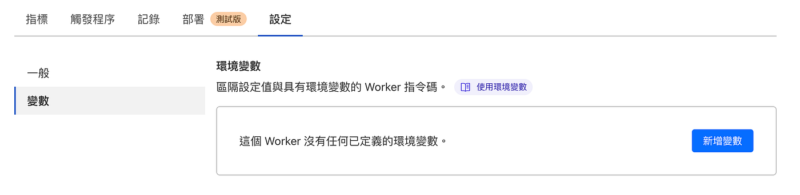

[Day23] Workers — 30 天入門 Cloudflare

Cloudflare Workers 是一個 serverless 運算平台，能讓開發人員使用 V8 引擎的 JavaScript 來撰寫和部署網站的腳本，並且能夠在 Cloudflare 網路中執行這些腳本。
Workers 具有以下功能：
- 無伺服器運算：使用 Workers 可以省去搭建伺服器的複雜性，並且僅在需要時使用運算資源，有效地降低了成本。
- 全球節點：Cloudflare 在全球設有超過 200 個節點，能夠為使用者提供快速的全球網路連線。
- 簡單易用：Workers 非常容易上手，並且具有豐富的 API 和工具，讓開發人員能夠更加輕鬆地編寫腳本。
- 安全可靠：Workers 執行於 Cloudflare 的安全環境中，提供強大的安全性能和 DDoS 防護，確保您的應用程式在網路上安全可靠。
使用 Workers 可以幫助開發人員實現很多功能，例如：
- CDN 邊緣緩存：使用 Workers 可以自定義網頁緩存規則，以加速網站的載入速度。
- API 閘道器：使用 Workers 可以輕鬆實現 API 網關和轉換器，以提高 API 的效率和安全性。
- 網路安全：使用 Workers 可以實現自定義的安全策略，包括濾波、黑名單、IP 防火牆等，以保護您的應用程序免受攻擊。
- 動態內容：使用 Workers 可以動態地生成網頁內容，實現更加靈活的內容交付方式。
Workers Playground
Cloudflare 提供 Workers Playground 可以在線上練習與嘗試 Workers，如這是一個小練習，使用者瀏覽網站的時候都會回傳 Hello World。

語法範例
Cloudflare Workers 文件提供大量的範例，讓我們可以學習如何撰寫 Cloudflare 語法，並可以看看範例可以做到哪些功能，比方說可以用來做反向代理、回傳 JSON、自動跳轉、身份驗證等功能。

Workers 設定
我們到 Cloudflare 後台選擇「Workers」中「建立服務」。

選擇一個服務類型，隨便選一個，因為之後可以再改程式碼就好，這裡只是給一個初始範例。

跟 Cloudflare Pages 一樣，Cloudflare 會提供服務一個網誌 .workers.dev 結尾，我們點選右上角「快速編輯」。

接下來就可以撰寫程式碼，並進行線上測試。

觸發程序
撰寫完成程式碼後，就可以用 Workers 提供的網址進行測試。我們到觸發條件可以自訂網域與設定路由，兩者差異在自訂網域是整個 Domain 綁到 Workers 上；路由則是該網域原本已經有網頁服務，將特定路徑的路由改到 Workers 上。

另外也可以撰寫 Cron 定時觸發與 Email 觸發等功能。

與 Cloudflare Pages 相同可以自訂義變數。

KV
Cloudflare Workers KV 是 Cloudflare Workers 所提供的一項服務，讓使用者可以透過這個 Key-Value 存儲系統來儲存和讀取資料，並且支援標準的 GET, PUT, LIST 和 DELETE 操作。
這個服務的優勢在於它能夠快速地讀寫和儲存大量資料。使用者可以透過 Cloudflare Workers KV API 來進行操作，並且可以與 Cloudflare Workers 一起使用，使得開發者可以建立出高效能且即時的網站。

D1
Cloudflare Workers D 是基於 SQLite 的關聯式資料庫。通過導入數據或定義表並在 Worker 中或通過我們的 API 編寫查詢，只需幾個快速步驟即可創建整個資料庫。D1 目前在 Open Alpha 中，不建議用於生產資料和流量。

結語
Cloudflare Workers 是一個強大而靈活的運算平台，能夠幫助開發人員實現很多功能，可以結合 KV、D1 進行開發，並且提供了快速、安全、簡單易用的開發體驗，是一個值得開發人員學習和使用的工具。
▶ 閱讀更多本系列文：30 天入門 Cloudflare